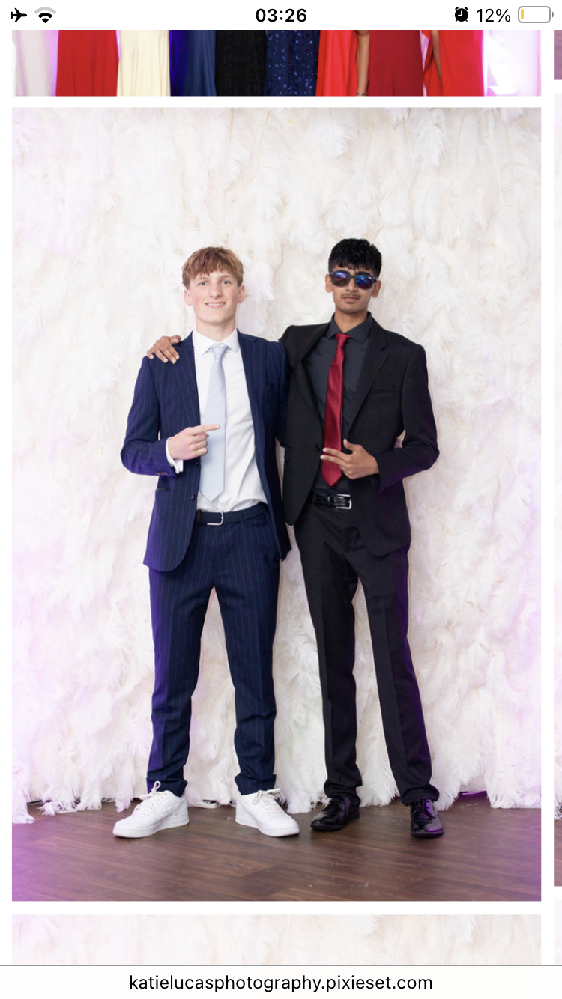
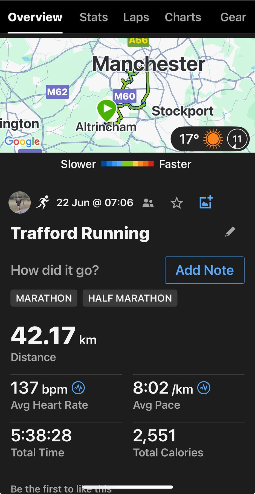
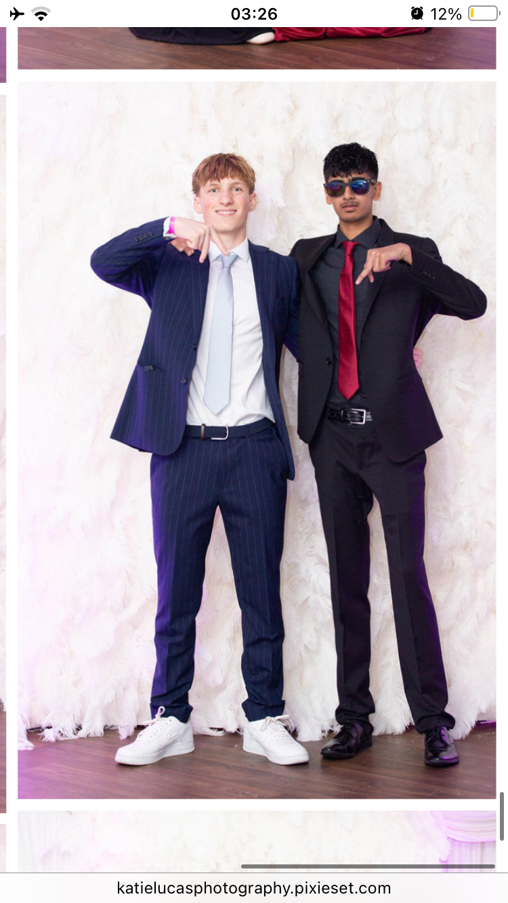

✕ CLOSE

The birth of ADS.— Where it all started
No training plan. No long runs in the bank. Just two mates who decided the morning of prom was the perfect time to run a full marathon.
42.17km around Trafford in 5 hours 38 minutes — then straight home to get suited up for the evening. It was stupid, it was completely unplanned, and it hurt in ways we didn't have the vocabulary for yet.
There was no charity, no fundraiser, no audience. But this was the moment AyaanDanShenanigins was born — before the name, before the logo, before a single follower. Everything since started right here.


No charity, no training, no plan. Just the spark that lit everything that followed.
Back the next one